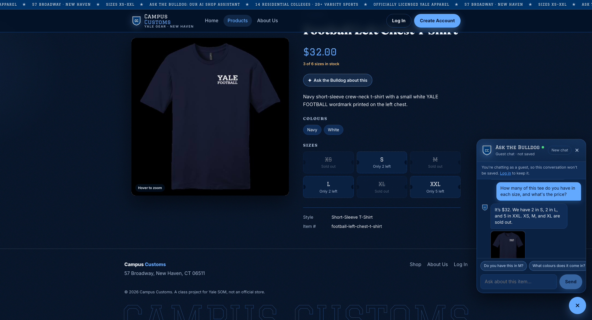
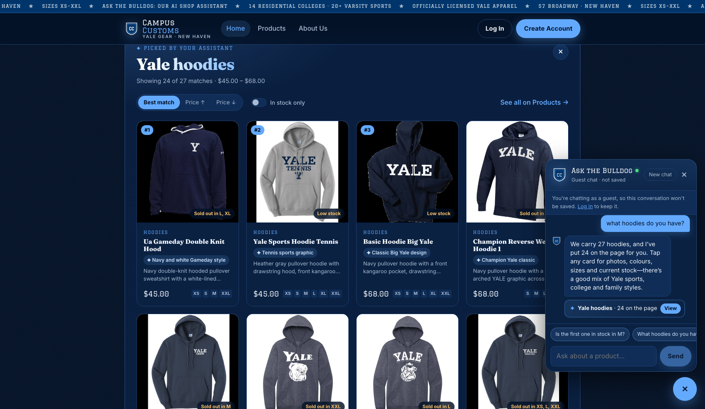
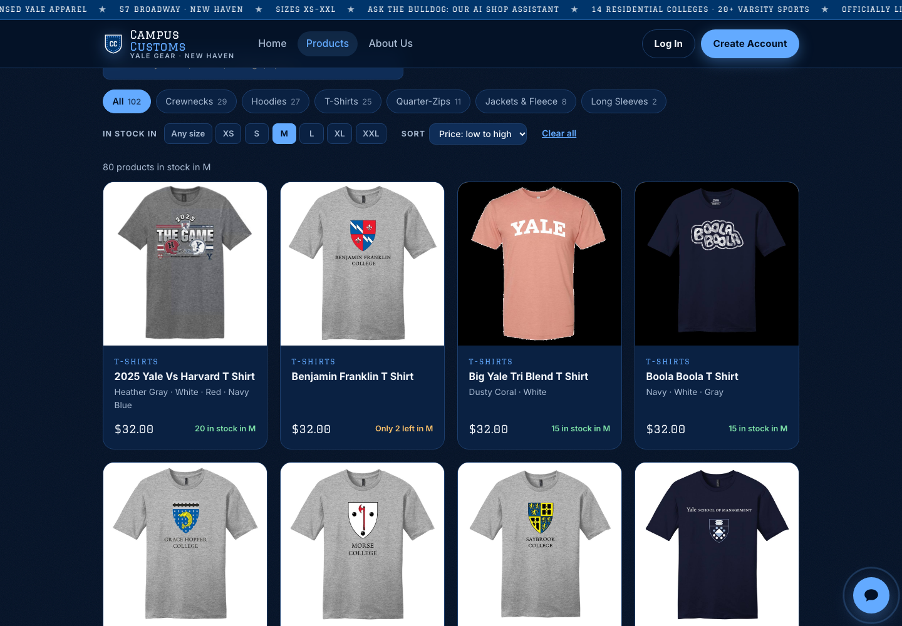

| # | Check | Result |
|---|---|---|
| 1 | Chat checks an item's inventory (honest stock and price from the DB) | PASS |
| 2 | Dynamic search-result cards appear after a category question ("what hoodies do you have?") | PASS |
| 3 | Problem 9 usability feature: "In stock in my size" filter and price sort on Products | PASS |
Check 1: Chat checks the inventory level of an item
Steps: open the Football Left Chest T Shirt product page → open the chat ("Ask the Bulldog") → ask "How many of this tee do you have in each size, and what's the price?"


What this proves: the assistant knew which item "this tee" meant from the page it was on, and its answer, "It's $32. We have 2 in S, 2 in L, and 5 in XXL. XS, M, and XL are sold out,", matches the database exactly. The sold-out sizes are stated plainly rather than hidden, and the page's own size grid (left of the chat) shows the same numbers.
Database rows at test time (inventory joined to catalogue):
| Price | XS | S | M | L | XL | XXL |
|---|---|---|---|---|---|---|
| $32.00 | 0 | 2 | 0 | 2 | 0 | 5 |
Check 2: Dynamic search-result cards after a category question
Steps: on the Home page, open the chat → ask "what hoodies do you have?"

What this proves: the agent searched the catalogue and returned structured product matches, and the website rendered them on the page as a "Picked by your assistant: Yale hoodies" section: 24 cards, all in the Hoodies category, each with a photo, name, price, short description, live stock badge and sizes in stock. The line "Showing 24 of 27 matches" matches the database (27 hoodies), and the chat reply points to the cards ("We carry 27 hoodies, and I've put 24 on the page").
Check 3: Problem 9 usability feature, "In stock in my size" filter and sort
Steps: open Products → under "In stock in" pick M → set Sort to Price: low to high (URL becomes /products?size=M&sort=price-asc).

What this proves: picking a size hides everything that's sold out in it. The page shows "80 products in stock in M", matching the database (SELECT count(DISTINCT product_id) FROM inventory WHERE size='M' AND quantity>0 → 80). Each card's badge switches to that size ("20 in stock in M", "Only 2 left in M"), and the list is sorted from $32 up to $98, so a shopper only sees what they can actually buy.